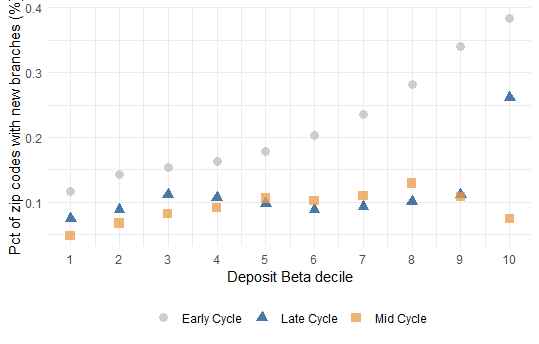

Summary statistics for the branch opening analysis sample, by bank size and period (Mid Cycle 2019, Early Cycle 2012). SD (within) is computed from residuals of regressions on county-year and bank-year fixed effects for Deposit Beta and log(Zip Deposits) only.
Source: code/analysis/desc_stats_opening_sample_02202026.qmd
Opening sample loaded successfully!
Observations: [N]
Years: [min] - [max]
Actual openings: [N]
Opening rate: [X.XX]%
Mean deposit beta: [X.XXXX]
Run desc_stats_opening_sample_02202026.qmd (chunk load-opening-sample) and paste the output above.
Descriptive statistics for large banks (CPI-adjusted assets ≥ $100B). Variables: New Entry (% zip codes with new branch), Deposit Beta, log(Zip Deposits), and county-level growth/level controls. Source: code/analysis/desc_stats_opening_sample_02202026.qmd (tbl-desc-stats-opening-large).
|Variable |Mean.mid|SD.mid|SD (within).mid|P10.mid|P90.mid|Mean.early|SD.early|SD (within).early|P10.early|P90.early|
|---------------------------|--------|------|---------------|-------|-------|----------|--------|-----------------|---------|---------|
|New Entry | 0.13 |3.67 | NA | 0.00 | 0.00 | 0.32 |5.63 | NA | 0.00 | 0.00 |
|Deposit Beta | 0.23 |0.05 |0.02319977 | 0.17 | 0.29 | 0.32 |0.04 |0.02022695 | 0.27 | 0.37 |
|log(Zip Deposits) |10.74 |4.26 |3.76414989 | 0.00 |14.01 |10.89 |3.52 |3.13653866 | 8.87 |13.65 |
|CRA 3yr growth | 0.05 |0.08 | NA |-0.02 | 0.12 |-0.11 |0.05 | NA |-0.16 |-0.06 |
|Deposit 3yr growth | 0.05 |0.03 | NA | 0.01 | 0.09 | 0.09 |0.08 | NA | 0.00 | 0.20 |
|Establishments 3yr growth | 0.01 |0.01 | NA | 0.00 | 0.03 |-0.01 |0.01 | NA |-0.02 | 0.00 |
|Low to Moderate Income Area| 0.30 |0.18 | NA | 0.07 | 0.50 | 0.29 |0.17 | NA | 0.06 | 0.49 |
|Mortgage 3yr growth | 0.04 |0.07 | NA |-0.04 | 0.13 | 0.01 |0.09 | NA |-0.09 | 0.13 |
|Payroll 3yr growth | 0.04 |0.02 | NA | 0.01 | 0.07 | 0.00 |0.02 | NA |-0.02 | 0.02 |
Descriptive statistics for small banks (CPI-adjusted assets < $100B). Same variables as Panel A. Source: code/analysis/desc_stats_opening_sample_02202026.qmd (tbl-desc-stats-opening-small).
|Variable |Mean.mid|SD.mid|SD (within).mid|P10.mid|P90.mid|Mean.early|SD.early|SD (within).early|P10.early|P90.early|
|---------------------------|--------|------|---------------|-------|-------|----------|--------|-----------------|---------|---------|
|New Entry | 0.10 |3.13 | NA | 0.00 | 0.00 | 0.08 |2.89 | NA | 0.00 | 0.00 |
|Deposit Beta | 0.21 |0.09 |0.0249597 | 0.11 | 0.33 | 0.27 |0.05 |0.02200401 | 0.20 | 0.33 |
|log(Zip Deposits) |11.47 |3.75 |3.3556936 | 9.18 |14.26 |11.55 |3.11 |2.81588267 | 9.64 |13.96 |
|CRA 3yr growth | 0.05 |0.07 | NA |-0.01 | 0.12 |-0.11 |0.04 | NA |-0.15 |-0.07 |
|Deposit 3yr growth | 0.05 |0.03 | NA | 0.00 | 0.08 | 0.10 |0.08 | NA | 0.01 | 0.20 |
|Establishments 3yr growth | 0.01 |0.01 | NA | 0.00 | 0.02 |-0.01 |0.01 | NA |-0.02 | 0.00 |
|Low to Moderate Income Area| 0.31 |0.19 | NA | 0.07 | 0.54 | 0.30 |0.18 | NA | 0.06 | 0.52 |
|Mortgage 3yr growth | 0.03 |0.07 | NA |-0.04 | 0.11 | 0.02 |0.08 | NA |-0.07 | 0.15 |
|Payroll 3yr growth | 0.04 |0.02 | NA | 0.01 | 0.07 | 0.00 |0.02 | NA |-0.02 | 0.02 |
